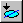
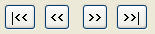

This page provides a list of key features that were changed from previous Origin 7.5 version to the new Origin 8.0 version.
When performing analysis from a graph, the Input Data node in the analysis dialog will be assigned to the active dataset, as indicated in the legend by the "red rectangle". In the case of a grouped plot (multiple datasets), if the analysis supports more than one Range, the Input Data node will be assigned to all data plots.
You can override this, by clicking in your graph to select your plotted curve. In this case, your selection will be recognized and assigned as the Input Data. When clicking a grouped data plot, all curves get selected. Click again to select just that one.
Previous to Origin 8, we offered one situation where 'analysis' was automated : in Set Column Values. When you entered an expression in Set Column Values, you were given the option of AutoUpdate. When you chose AutoUpdate, a Lock icon appeared in the column header after execution and if any data in the Set Column Values expression changed, the Lock would briefly turn yellow to indicate an Update was needed, the expression would evaluate and the column would update. The lock is an indication that a column is the result of an expression and that the column is Read Only.
This concept has been extended in Origin 8 to include many Analysis operations including Statistics and Fitting. The AutoUpdate has been changed to Recalculate and now has three modes :
A new tool on the Standard Toolbar - Recalculate - indicates if any Manual recalculations are pending (the tool turns yellow in such cases) and its Tool Tip indicates how many operations are pending. There is also an AutoUpdate tool (not displayed by default - see View : Toolbars : [Button Groups] : Auto Update) that can be used to globally shut off Auto Update. When Auto Update is turned back on with this tool, any Auto Update operations that were blocked by the tool will then execute.
Left-clicking a Lock icon now opens a context menu for various options related to an operation.
From Origin 8, the theme and template concept have expanded from graphing to analysis features. You can save the settings in analysis dialogs as themes and access these themes from menu or dialog drop-down. To know how to save and use the analysis theme, please refer to this example. For complicated analysis procedures, you can further save the procedures as an template and reuse the template by just importing new datasets. To see how analysis template works, please open the Dose Response Analysis.ogw in the \Samples\Curve Fitting folder.
To the right of an input/output data range, there is usually a Interactive Data Selector control and a triangle button. When the Interactive Data Selector button is clicked, you will be allowed to make a workbook/graph active and select the data range for input/output. The triangle button, on the other hand, provides a short-cut to reseting or reselecting the data.
In Origin 7.5, you can switch between basic mode and advanced mode in the NLSF dialog. In Origin 8, all settings are organized in different tabs, but most users can perform fitting on the Settings : Function Selection page, just like the basic mode in Origin 7.5.
On this page, you can:
Fit Curve and Residual panels have been added to help you monitor the fitting process.
Origin 8 automatically recognizes all datasets in the active layer. When bringing up the NLFit dialog, all data ranges in the layer will be imported into the InputData node.
Settings related to input curve are under each input data range branch. For example, when fitting multiple dataset you can use a global weighting method or specify a particular weighting method for each curve under the y branch.
On the Settings: Advanced page, you can choose to output many statistical quantities, different kinds of residual plots and tables to find x from y values or find y from x values.
When there is an error (such as invalid input data, etc), a message will be shown on the dialog, which will provide a hint to help you to fix it.
In Origin 8, the Fitting Function Organizer (Tools: Fitting Function Organizer) organizes all fitting functions. From this dialog, you can add or remove fitting functions as well as simulate a curve.
The Before/After Fit Script feature has been removed from the GUI. In previous versions of Origin, you could enter LabTalk scripts, to be run either before or after fitting, directly into the NLSF dialog box. Beginning with Origin 8, we recommend using an X-Function for pre-processing of data and the use of auto update for column values, if needed (Recalculate = Auto). If you wish to make use of the older methods, you must edit the [INITIALIZATIONS] and [AFTER FITTING] sections of the FDF directly, using a text editor.
Origin 8 allows you to specify Derived Parameters to be calculated. Input them in the editbox in the Function Organizer dialog and then Save the function. Once you have defined derived parameters (for example in the DoseResp fitting function), Origin will calculate these parameter values and output them in fit reports.
On the Settings : Fitted Curves page, when the X Data Type is Uniform Linear, the number of Points has been increased from 60 to 100. In Origin 7.5, the fit curve displayed on the graph is generated with y values computed only at the x values of the dataset. From a fitting point of view, this makes no difference, but to the user fitting few points, the fit curve may not look good or as smooth while iterating. In Origin 8, the fit curve displayed in the dialog preview uses the X Data Type setting, so if set to the default of Uniform Linear the fit curve will be drawn with 100 points. ID = 3757
When the fitting is performed on plotted data, the result can be pasted back to the graph. In Origin 7.5, the result is pasted into a text label. However, in Origin 8, the result is put into a table. And you can customized which template used to create such table in the NLFit dialog.
In Origin 8, you can Find and Replace both Worksheet and Matrix cell values from the Edit: Find and Edit: Replace menus. For more find/replace settings, you can also use the wreplace and mreplace X-Functions.
The new Extract Worksheet Data dialog supports worksheet/column alias in the conditional statement. You can test the condition by clicking the Test -- select if true button before extracting the data.
New Region Data Selector tool helps to select data from active plot or all data plots. You can hit the space key to switch between its rectangle mode and freehand mode.
When you use the Data Selector tool and you have selected on of the Data Markers (left or right), Keyboard access to moving the markers has changed:
Ctrl+Left Arrow and Ctrl+Right Arrow still moves the selected marker one step.
The Annotation tool is used to label a data point. Click on a data point to create a text label object with the point coordinates and an arrow connecting the selected data point to the label. When the label is moved, the arrow tracks the label keeping it anchored to the data point.
The Data Info Tool appears whenever you use the Data Reader Tool in Reader, Annotation or Cursor mode. It provides more information than the traditional Data Display.
Tracker ID TBA
The Regional Mask button in the Tools Toolbar replaces these buttons with sequential masking, non-sequential masking on one or more curves. See Help fles for more details.
When using the Data:Move Data Points option, you can use the following system variable
@MDS
to control the symbol size during moving of the data points. By default it is -1, which translates into size 12 if less then 10 data points, size 6 otherwise. If @MDS is positive its value will be used as symbol size regardless of number of points.
These kinds of functions include:
System properties in 7.5 and earlier controlled when to open Excel files as Excel and when to open as Origin worksheets. These options are no longer needed.
system.Excel.OpenAsExcel - Open as Excel(1) rather than as Origin worksheet(0)
system.Excel.OpenAsPrompt - Controls prompt for Excel/Origin choice
To open an Excel file using Excel in Origin, use the document command:
doc -a <i>file_path_and_name</i>
To import an Excel file into an Origin Worksheet, use the impExcel X-Function:
impExcel <i>file_path_and_name</i>
You can use the following:
impExcel -d; // Open the impExcel dialog after selecting a file(s)
impExcel -h; // Get brief help for the impExcel function
help impExcel; // Open the X-Function Help file
In addition to ASCII files, worksheets can also be exported as PDF files, images, NI TDM and sound files. You can make the worksheet to be exported active and find these exporting tools in the File: Export menu.
Origin removes support for exporting graphs as xpm and xwd files in Version 8.
Preview is added to the graph export dialog. Themes can be applied to the exported graph. More exporting options are available.
Origin removes support for exporting Images as xpm and xwd files in Version 8.
ID 6759 and 10059
Support for %(1) translation mode is added to allow user customization on how %(1) etc are translated. See Format : Page " [Legends/Titles] for new options for auto-generated Legends.
Axes titles have also changed to use substitution notation to allow linking to data plot column labels. The unsubstituted text for these axis titles is
%(?X) for the X axis
and
%(?Y) for the Y axis
which will display the Long Name (or Short Name if no Long Name is available) of the first X,Y data plotted in a layer. Graph Templates or Graphs in Projects saved in Origin 8 will not display correctly in earlier versions that do not understand this notation.
Additionally, there is a new tool for updating legend. You can open it by selecting Graph: Update Legend.
ID 2306, 9867
The order of the R and Theta columns have been reversed. Before this change, you needed to put data into A(X) B(Y) as A(theta) B(r). In Origin 8, the worksheet is structured into the more conventional A(X)B(Y) as A(r) B(theta). Older projects will still open in Origin 8 looking the same, but if you open an Origin 8 polar plot into an earlier version, you will see the data list displayed differently.
Text color is controlled from the Format Toolbar instead of the Style Toolbar.
ID 7639
In the Mask Toolbar, the Mask Point Toggle and Mask Point Range buttons are disabled. Now the Regional Mask button in the Tools Toolbar replaces these buttons with sequential, non-sequential, & single point masking that operates on one or more curves in a Window.
This "red rectangle in the legend" is an active dataset indicator. It is controlled by the Indicate Active Dataset check box on the Legends/Titles tab of the Graph level of the Plot Details dialog box.
This check box existed in previous versions and when checked, as it is now by default, you can click on any plot symbol in the legend to make the associated data plot active. Clicking on the legend makes it easier to change active dataset. Alternatively, you can go to the Data menu and select the correct dataset by name.
The Indicate Active Dataset graph property is saved with the system theme, so if you uncheck the Indicate Active Dataset check box and resave the template, the property will still be On when you plot into this template. You'd have to edit or clear the graph system theme.
ID 8613
Hold the Ctrl key down and double-click on the slice you want to edit. The Plot Details dialog is opened, allowing you to edit the pattern, pie geometry and label of this individual slice.
In Origin 8, besides plotting a contour from a matrix, you can now plot directly from XYZ worksheet data. This kind of plot uses a triangulation algorithm to interpolate contour lines and supports both a Data boundary and a Layer boundary.
This kind of contour plot also support polar coordinates (Plot: Contour: r(X) theta(Y) Z Polar Contour)
To display spectrums, you may be interested in looking at the general shape and less concerned about the Y offset. You can use the Stack Lines by Y Offsets (Plot: Multi-Curves: Stack Lines by Y Offsets) to create such curves.
You can use the new merge graph tool (Graph: Merge Graph Window) to choose which windows to merge, how to arrange these plots and preview the result.
The new Layer Management tool (Graph: Layer Management) is an interactive tool which allows you to add, delete and rearrange layers easily.
Press Ctrl to select several sections in the same XY column and plot a graph; different ranges are plotted in the same graph layer.
Highlight multiple Y column and select Plot: Statistics: Scatter Matrix from the Origin menu.
You can use Long Names, Units, Parameters in auto legend. Open the Plot Details dialog. Select the graph. Click the Legend/Titles tab and select Translation Mode from the drop-down list.
It is possible to name a graph layer with the Layer Management tool. Then you can see this name, instead of layer index, in the Plot Details dialog and the Plot Setup Dialog.
The algorithm for connecting data points with spline (actually, cubic spline) is changed. Therefore, if you create a spline connected graph in Origin 8 and another spline connected graph with the same dataset and the same styles in Origin 7.5, you may have two graphs that look different. Both graphs are correct.
Spline connection uses a cubic spline curve across two data points to connect them. In fact, there could be countless cubic spline curves across the two data points. We can choose any one of them. The method for choosing the curve in Origin 8 is different from that in Origin 7.5, making spline-connected graphs in Origin 8 different from spline-connected graphs in Origin 7.5.
In version 7.5, once a file has been imported into a worksheet (using ASCII Import or Import Wizard) information pertinent to the file such as file name, file date etc were stored in the worksheet page under an ASCII storage area. This area was then accessible from script window by typing
page.info.=
The information was also accessible from the GUI from a text label. When editing a text label with in-place editing, one could right click and select Insert Info Variable, or press CTRL-H to bring up a dialog and from that dialog one could select the file information (or any import variables extracted from header)and insert them into the label.
The above works in 8.0 as well. But in addition to the above, the following is also supported in 8.0:
The information corresponding to each imported file is also saved into a binary area of the page storage. This binary area holds separate information on each file that was imported into the workbook. In contrast, the ASCII storage area carried over from 7.5 gets over written any time another file is imported into the same book.
The binary storage area contains additional information such as import date, data range, and also information on settings used to perform the import. This information is accessible to user and also used by Origin to perform re-importing of same file etc.
From the GUI, both the ASCII and binary storage areas can be viewed using the workbook organizer (right click on workbook title and select Show Organizer). The binary storage area has an Imported Files node which contains subnodes for each imported file, named with the file name.
From a GUI point of view, there is no difference whether user wants to access the information in the ASCII storage area or the binary storage area.
Information from either storage area can be inserted into any text label. When the Insert Info Variable dialog is brought up from a text label in version 8, information corresponding to all workbooks of all data plots are accessible to the user, both from the ASCII and from the binary storage area. The binary area will be listed as File1, File2 etc for each file that has been imported into the workbook.
The file date, and the newly added import date, along with other such date information, are all stored as Julian Date, both in ASCII and binary storage areas in O8, similar to how it was stored in ASCII area of 7.5. The difference is that when viewing this information in workbook organizer, the binary area dates are displayed in a nice format, such as
8/9/2007 13:57:57.
When such dates, either from ASCII or binary areas, are inserted as link (by checking the Insert as Link check box in the dialog) Insert Info Variable dialog, the resulting string will show the Julian date. The text label will then contain literal text such as below, for example, where the file date from the 1st file from binary area was inserted as link:
%(1, @W,SYSTEM.IMPORT.FILEDATE)
User can format this to show a desirable date/time format, by changing it to, for example:
$(%(1, @W,SYSTEM.IMPORT.FILEDATE),D1)
which will then display, for example, as
Wednesday, August 08, 2007
Note that the 1 in D1 above corresponds to the 2nd entry in the Display drop-down for Date formatting which is accessible in the Column Properties dialog
When you right click inside a worksheet cell in a workbook that contains information on imported files, there is an Insert Variable context menu, which has been newly added in version 8. This context menu brings up the same Insert Info Variables dialog which can be used to insert various file related information. Note that when inserting file date or any date information, again the date is inserted as Julian date.
User then has two options on formatting that date information. One way is to right click just inside that cell and select Format Cell which can then be used to set the display format of just that cell to Date, with desirable selection from the "Display" drop-down. Another way is to format the entire column that contains the cell using the Column Properties dialog. In this case all cells in that column are of course converted to Date format, but in this case user can also type in a custom date format string instead of being limited to the choices available in the Display drop-down. The custom display formatting is saved with the column and thus with the Origin Project and other customers who open the project will then see the same display string.
One exception to the above formatting requirement is the following:
If you use the command or script windows, and then make use of the impinfo X-Function, this X-Function can get the import file information from the binary storage area, into a LabTalk tree variable. Thus for example, after importing a file, one can go to the command window and type:
impinfo trInfo:=mytree
This will place the information from the binary storage area corresponding to the last imported file, into the LabTalk tree variable mytree.
Then user can access variables from the tree such as:
>>string mydate$=mytree.info.importdate$
>>mydate$=
8/9/2007 14:13:09
And in this case the information in this tree variable is already in a "desirable" date format, which is the same format used to display the date in the workbook organizer.
When you create an Analysis Template by performing import, analyzing the data, then clearing the data, and saving the book as an OGW object for future repeat use, you may want to use some information from the import such as import date, or header variables etc, in your analysis template.
In such a situation, one should make use of the information from the page.info ASCII storage area of the workbook page rather than the individual file nodes in the binary storage area. This is because when the Analysis Template is used in the future and a new file is imported, only the ASCII storage area information gets updated. The binary storage area gets appended with new branch for the new file and so any links placed in the Analysis Template will still point to the old file's binary area and will not get updated.
As an example, see the Result Summary sheet of autofit.ogw analysis template example accessible from the File|Recent Books menu item.
Tracker ID: 7650
Two new modes are added. They are Replace existing data and Start new books.
ReImport Directly is a new option in the File : Import menu. Not all file types are supported and there are some limitations.
File types currently supported:
Limitations
Only the first file imported into a sheet is supported. If you need to have ReImport capability, do not choose New Columns when importing multiple files - choose New Sheets or New Books.
ReImport is designed to be used when you have an external application that is saving your data to the same file by either replacing existing data or appending additional data. The ReImport gets the latest values in that file.
ReImport by Changing Options is a new option in the File : Import menu. The same file types and restrictions that apply to ReImport Directly apply here.
When you have very large datasets that may take a while to import and you have data within the file that helps you determine if that file is of real interest to you, you can use ReImport by Changing Options to assist you. When you first import your data, use the Options to set Partial Import Options to bring in only the portion of data that helps you determine suitability. If the data meets your criteria, then choose File : Import : ReImport by Changing Options and turn off Partial Import options to bring in the whole file.
The ADO tool (File: Database Access (ADO)) provides a user-friendly GUI to help you building query, preview data and import data into worksheet. The query is associated to the worksheet so you can modify and re-import data.
Partial importing is supported for the following file types:
You can import just part of the data that you believe is representative into Origin. This is especially useful when the data file is very large.
Click here to learn more about variable scope.
Click here to learn more about range notation and declaration.
String assignment now requires the $ symbol to have no space between the object or variable and the '$':
col(1)[1] $= This does not work in Origin 8; col(1)[1]$ = This is OK; col(1)[2]$= And this is OK;
Click [LabTalk:String (object)|here] to learn more about string functions.
The new [LabTalk:Data Types and Variables#LabTalk Data Types|LabTalk Data Types] have C-like methods and properties.
X-Function can be easily executed from Labtalk scripts. The new command window has extended support for accessing X-Functions, including auto complete.
The Command Window is a new window introduced in Origin 8 that provides a comprehensive interface for developing, saving and running LabTalk script
The current working folder is somewhat like operating in DOS, you can run LabTalk script files (*.ogs) directly in current working folder.
User can use LabTalk to access database. Please see this example. (SR2)
Added an @AM system variable to control analysis markers. (SR2)
Four variables were added for accessing to sampling interval infomation: wks.col.xinit, wks.col.xinc, wks.col.xname, wks.col.xunits. (SR2)
Tracker ID 9182.
This feature is available from the main menu as Graph: Layer Management.
This feature is available from the main menu as Worksheet: Convert to Matrix.
This feature is available from the main menu as Matrix: Convert to Worksheet.
Tracker ID 6323
This feature is available from the main menu as Graph: Merge Graph Windows.
This feature is available from the main menu as Graph: New Layer(Axis).
The Color Palette has been removed in 8.0. See Default and Custom Colors.
Tracker ID 7132, 8603
This feature is available from the main menu as Tools: Theme Organizer.
This option is now two menu items :
Analysis: Fitting: Compare Datasets
Analysis: Fitting: Compare Models
Tracker ID 5940, 6273, 6346, 7096
Both functionalities are now handled under Tools: Package Manager.
This feature is available from the main menu as Help: Reactivate Reminder Messages.
This feature is available from the main menu as Worksheet: Worksheet Script.
This feature is available from the main menu as Window: Script Window. There is no longer a Speed Key to bring up this window.
An Individual license provides the Origin software and allows the licensee to obtain license files that enable Origin to run on two computers if you did not purchase Maintenance. On the other hand, if Maintenace is purchased, you can run Origin on a third computer.
Tracker IDs 4210, 5697, 5823, 5909
Origin 8 uses the FFTW (the Fastest Fourier Transform in the West) algorithm by Matteo Frigo and Steven Johnson of Massachusetts Institute of Technology which won the third Wilkinson Prize for Numerical Software on Thursday, 8 July 1999 for a library of C routines for the efficient computation of the discrete Fourier Transform of real and complex data.
Perform 1D interpolation/extrapolation on a group of XY data to generate a set of interpolated data with uniformly-spaced X values using 3 alternative methods. See the interp1 X-Function for more information.
Perform 1D interpolation/extrapolation on a group of XY data to generate a set of interpolated data with uniformly-spaced X values using 3 alternative methods. See the interp1xy X-Function for more information.
Perform trace/periodic interpolation on the data. See the interp1trace X-Function for more information.
2D interpolation can be perform when a matrix window is active. See the minterp2 X-Function for more information
3D interpolation constructs a smooth function which interpolates a set of scattered data points using a modification of Shepard???s method. See the interp3 X-Function for more information.
The normalize X-Function adjusts a curve to a specific "standard" level by dividing the mean, SD, a user-specified value or normalize data to certain range.
the new integ1 X-Function supports both Mathematical Area and Absolute Area in integration.
2D median filter, average filter etc. can be applied to matrix data.
Median filter can be accessed by selecting Mathematics: Median Filter. You can open the dialog for applying user filter or custom filter by choosing Mathemetics: Custom Filter. Average filter and other special filters can be found in the Special Filter tool, which can be accessed by selecting Mathematics: SpecialFilter.
This feature is available from the main menu as Matrix: Convert to Worksheet.
This feature is available from the main menu as Worksheet: Convert to Matrix.
There can be multiple matrix sheets in a matrix book. To add a new matrix sheet, right-click the sheet tab and select Add.
A matrix sheet may have several matrix objects, these matrix objects share the same dimensions (same rows and columns). To switch between different matrix object, click the upper-right icon in the matrix window and select the object you want to show.
Besides, you can also use the Matrix Object scroll bar (Right-click matrix window title and select Show Matrix Object scroll bar) to draw & show these objects:
A matrix can be either a data matrix or image matrix. You can tell this from the icon near the top-right corner of the matrix window:
For most image processing X-Functions, the input matrix is required to be an image matrix.
Previous to Origin 8, Origin used a Color Palette dialog where users could edit Origin's default palette of 24 colors and add 16 user-defined colors. The color information was saved in ORIGIN.INI in the [Color] section as a name and Red Green Blue (RGB) values. When used to color an Origin object, Origin stored only the index from this list and not the actual RGB values. This produced problems with shared project files :
Origin 8 still has a default palette of 24 colors, but these colors cannot be edited. There are
still 16 user-defined colors as well, but the editor for these colors is the Windows Color dialog,
and when these colors are used by Origin, the full RGB value is stored rather than an index.
You can enable auto saving in the Tools: Options dialog. Then for every n minutes (the period can be set in the Options dialog), the current OPJ is saved to the /Autosave subfolder under your user files.
Origin 8 provides a Group Folder feature where a group leader, or server machine, can share various Origin file types with multiple group members, or client machines. The terms server and client are used here in a very general sense.
This group folder feature can be used by any site/organization that has multiple Origin users managed by a concurrent FLEXlm license.
Origin includes the entire Numerical Algorithms Group Mark VII numerical library. This library provides you with time-tested numerical computation algorithms, such as Statistics, Fourier Transforms, Linear Algebra, Regression, Multivariate Analysis including Principal Component Analysis, and more. All NAG functions are accessible from Origin C, allowing you to develop sophisticated applications that require advanced numerical computation.
Origin Project Files have maintained significant forward and backward compatibility over the history of Origin. A number of new features in Origin 8 break this compatibility.
In the case of Project Files (and associated Child Window files) saved in Origin 8, these include, but are not limited to :
If you open a Project File in Origin 7.5SR6 that was saved in Origin 8 and subsequently save it in Origin 7.5, please note the following (see reference numbers above):
(1) These items are not recovered, but the text that links cell data is recovered.
(2) If you had opened a Table worksheet in 7.5, the number of rows displayed in Origin 8 may increase.
(3) As long as you did not change these items in 7.5 they will be recovered in Origin 8.
(4) The names of these row headers are remembered, but the data in their respective columns is lost.
If a 7.5 user opens a project saved in 8.0 that had a multi-sheet workbook and wants to see the individual sheets, you can use this script
%Z = "";
loop(ii,1,page.nlayers) {%Z = %Z $(ii);};
ii = 1;
getn (View Sheet ) ii:Z (Multisheet Viewer);
page.active = ii;
doc -uw;
to view a particular sheet. Or you can use this script
doc -e W {
%M = %H;
if(page.nlayers > 1) {
loop(ii,1,page.nlayers) {
win -a %M;
page.active = ii;
doc -uw;
wo -s 1 1 wks.ncols wks.nrows;
domenu 57634;
win -t data origin;
%N = %H;
wo -s 1 1 1 1;
domenu 57637;
loop(jj,i,wks.ncols) {
%A = %M!wks.col$(jj).label$;
%N!wks.col$(jj).label$ = %A;
%A = %M!wks.col$(jj).name$;
%N!wks.col$(jj).name$ = %A;
val = %M!wks.col$(jj).type;
%N!wks.col$(jj).type = val;
val = %M!wks.col$(jj).format;
%N!wks.col$(jj).format = val;
}
%N!wks.labels();
}
win -cd %M;
}
}
to split all multi-sheet workbooks into individual sheets.
8.1 added a feature that significantly reduces file size where data consists of many long strings. Such files saved in 8.1 may not show all the data when opened in earlier versions. To support older versions (at the expense of increased file size) set the System Variable @LSSP = 100.
The Package Manager (Tools: Package Manager) allows you pack your Origin files and share with other Origin user. The extended name for new package is .OPX, which is different from previous version, .OPK. OPK files can still be used in Origin 8 but the previous Origin will not recognize .OPX files.
In Origin 7.5, the first step in Origin's calculation of the FFT is to make the number of data points an integral power of 2. But in Origin 8, data is not padded before FFT is performed on it.
STFT (short-time Fourier transform) tool can be used to analysize how frequency changes with time. This tool can be opened by selecting Analysis: Signal Processing: FFT: STFT from the Origin menu.
Wavelet analysis tools include discrete wavelet decomposition, continuous wavelet transform, etc. They can be found in the Analysis: Signal Processing: Wavelet menu.
Tools for analyzing 2D signals include 2D FFT/IFFT, 2D correlation, 2D wavelet decomposition/reconstruction.
In Origin 7.5, the response data set used for deconvolution should meet the following requirements:
However, in Origin 8, such requirements are not necessary.
Although no new method is introduced, each smoothing method is improved in Origin 8. For example, boundary condition support is added when Adjacent-Averaging, Savitzky-Golay or Percentile Filter (Median Filter) is chosen. User is required to enter Number of Points for the FFT-Filtering method. However, in Origin 8, this is replaced by a more intuitive and more commonly-used cut-off frequency.
For Adjacent-Averaging, you can opt to use the weighted averaging.
Median filter method is replaced by percentile filter. The latter allows more agility so you can also use it to detect the envelope of the input signal, etc.
For FFT Filter, you can choose whether to use the low-pass parabolic filter which is used in Origin 7.5, or the improved low-pass parabolic filter using new algorithm, but it is available only from script.. And you can also choose whether to subtract a baseline before fft filtering is used, but it is also available only from script.
Note: 2D smoothing is removed in Origin 8.
Dialogs of many signal processing tools have preview panels. Therefore, you can try different combinations of the variables/settings and see their effects immediately. This should be more convenient for choosing variables to suit your need.
Spectroscopy tools are opened as X-Functions Panels attached to the graph windows. For Baseline and Peaks tool, different X-Functions will be opened in the X-Function panel. You can use the Prev and Next to navigate among them,
In Origin 7.5, all spectroscopy tools must be started when a graph is active. However, in Origin 8, the Baseline and Peaks Tool can be opened when a workbook is active. You can select the data to be analyzed and choose Analysis: Spectroscopy: Baseline and Peaks from the Origin menu. Origin plots the data in the graph and starts the Baseline and Peaks Tool.
User Rectangles or Use Data Points Outsize Window is a new method for creating baselines that can be used in the Baseline and Peaks tool and the Create Baseline Tool. When this method is chosen, several rectangles are added to the graph and you can resize and move them. Then, data points outside these rectangles are used to create a baseline, according to the connection type you have specified.
Origin 7.5 searches peaks with moving rectangles. In Origin 8, two new methods are added. One locates peaks using local maximum values. The other utilizes first derivative to find the peaks.
No matter which peak picking method is selected, you are allowed to specify a Smoothing Point with the peak finding X-Function. If this number is not 0, smoothing is performed to the data before the peak finding is carried out.
The EMGauss function, which can be used in the Peak Fit Module in Origin 7.5 to perform peak fitting has been renamed to GaussMod. You can use it in the Peak Analyzer.
Tracker ID TBA
In Origin 7.5 a selection of worksheet data could be pasted into a new worksheet by placing the mouse cursor in the blank upper left hand corner of a worksheet. A down arrow appears and the entire worksheet is selected (turns black). A right-click and paste fills the worksheet in the appropriate manner. In Origin 8 simply place the cursor into the upper leftmost data cell and paste.
Since the new Origin 8 worksheet support multiple worksheet labels, using Crtl + C or right click the column and select Copy will also copy the worksheet labels, such as long name, unit, etc. If you want to copy worksheet data only, right click the column and select Copy (full precision).
Besides column cells to save the raw data, you can also specify several column labels such as Long Name, Unit, Comments, Parameters, Sparklines, etc. To view these labels, right-click the workbook title and select View: Labels.
Right click on a Sheet Name tab and select 'Insert.'
Choose Worksheet:Extract Worksheet Data.
There is a new Before Formula Script panel. You can enter any script here and the script will be executed before the column values are set using the formula. Because of this panel, the formula is allowed to be empty. Additionally, because you can define ranges that point to columns in other worksheets, it is possible to use values in other worksheets in the formula.
The F(x) menu provides access to more functions. Compiled OC functions are also accessible in this menu.
It is easier to select a column to use in the formula in the new tool. The wcol(n) menu and the wcol(name) menu lists all available columns by index and name. Column Browser also helps to find the column you want.
Formula, as well as the scipt in the Before Formula Script panel, can be saved and loaded later.
The  buttons allow you to edit formulas for multiple columns without closing and reopening the dialog.
Right-click on the cell where you want to insert an image/graph/variable/notes/sparklines/arrows and choose from the short-cut menu.
For example:
You can set the fill color, font color, font fact etc. for worksheet cells, using the Style toolbar or the Format toolbar.
Rich text formatting can be supported, providing that the Rich Text check box in the Format Cells dialog is selected. In this case, you can use superscript, subscript and greek characters.
The Worksheet Theme Editor dialog allows you to customize worksheet styles. You can open this dialog box by right-clicking on the gray area of the worksheet and choose Edit Formatting from the short-cut menu.
A set of worksheet styls can be saved as a theme. The worksheet theme can be applied to other worksheets when needed.
Worksheet themes are managed with the Theme Organizer, which can be opened by pressing F7.
Using the Manual or Auto recalculate mode, we can save the analysis procedure, such as source data, output worksheet, analysis tools have used in a workbook and then save this workbook as .OGS file. This workbook can be used as an analysis template and once you import some new datasets, it will perform the analysis procedure again. The sample file, Dose Response Analysis.OGW in \Samples\Curve Fitting folder, is a good example to show you how to do this.
Workbook Organizer can be opened when you right-click on the title of the workbook and choose Show Organizer. The Organizer displays information related to the workbook, such as long name, size, creation time, etc. If data files have been imported into the workbook, the Organizer also keeps information related to the imported files. You can also add any user info to the Organizer, by adding and editting User Trees.
Workbook Script Panel can be opened when you right-click on the title of the workbook and choose Show Script Panel. The panel displays scripts related to the workbook, and these scripts can also be saved in the workbook template. You can edit the scripts and click Execute All button to run the scripts.
You can edit Long Name, Unit, Parameters, etc. for worksheet columns.
Select a cell. Hold the ALT or CTRL key down and drag the mouse to fill data.
Double-click on a column to open the Column Properties dialog. Set Format to Numeric. Then you can select Complex (16) from the Data Type drop-down list.
With Matrix window active choose File: Import: Image and import an image. Now press the Ctrl+Shift+D k